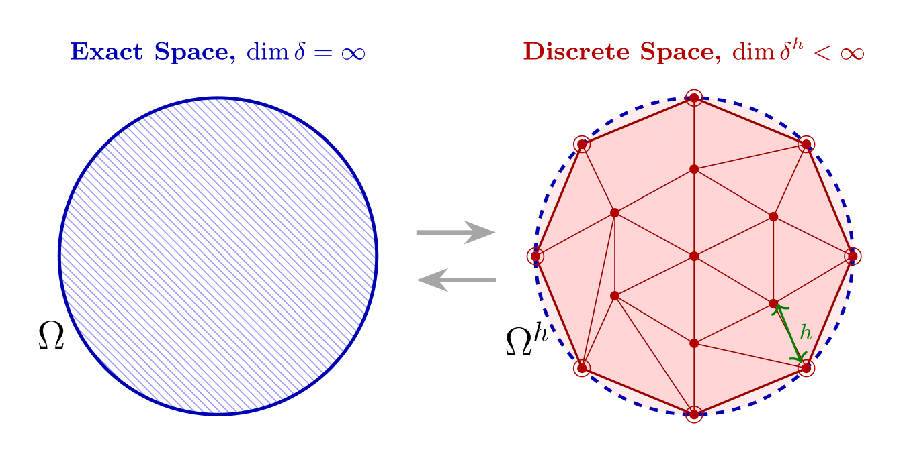
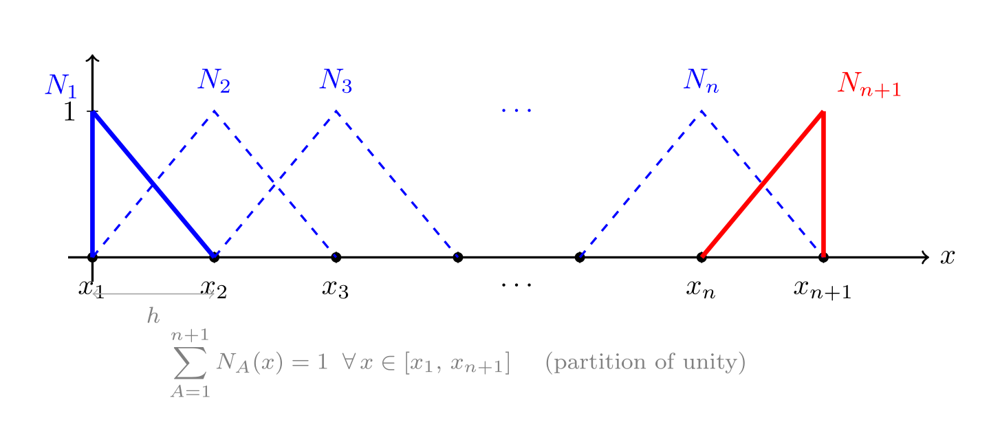
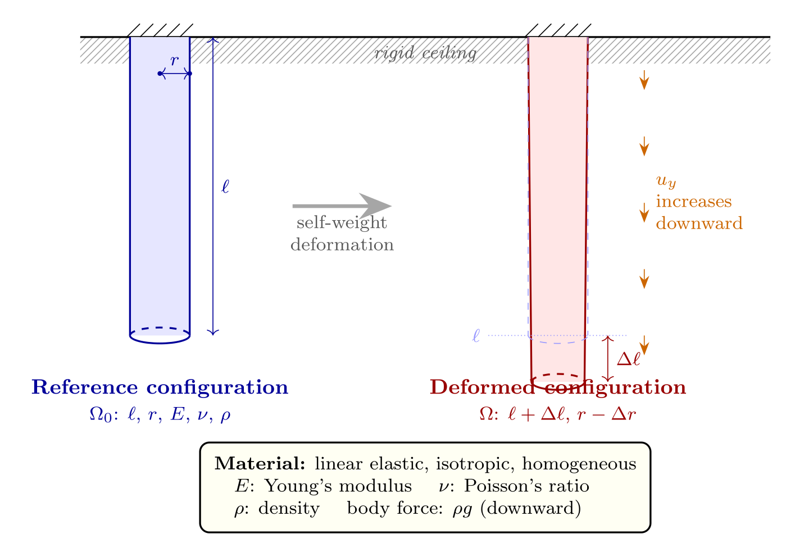

Central Ideas
Finite Element Method, ME 477
Table of Contents
Spatial Discretization Concepts
\(\leftarrow\) Previous Lecture
- We construct finite-dimensional approximations of function spaces \(\delta\) and \(\mathscr{V}\), denoted as \(\delta^h\) and \(\mathscr{V}^h\), respectively.
The superscript refers to the association of \(\delta^h\) and \(\mathscr{V}^h\) with a mesh, or discretization, of the domain \(\Omega\), parameterized by a characteristic length scale \(h\).

We think of \(\delta^h\) and \(\mathscr{V}^h\) as being subsets of \(\delta\) and \(\mathscr{V}\), written as \[ \delta^h \subset \delta \hspace{1em} (\mathrm{i.e., if} \; u^h \in \delta^h,\, \mathrm{then}\, u^h \in \delta) \]
Remember Tom Hughes… https://www.asme.org/topics-resources/content/thomas-jr-hughes-2018-medal
The finite element method : linear static and dynamic finite element analysis / Thomas J.R. Hughes
(\(\S1.5\)) (Bubnov-) Galerkin Approximation
Remember the resctriction on the trial and weight functions, \(u\) and \(w\), at the essential boundaries (\(\mathscr{g}\) type):
- The same applies to the discretized forms \[ u^h(1) = \mathscr{g} \hspace{.5em} (u^h \in \delta^h) \hspace{1em} \mathrm{and} \hspace{1em} w^h(1) = 0 \hspace{.5em} (w^h \in \mathscr{V}^h) \]
- We construct the trial function \(u^h \in \delta^h\) by using a weight function \(v^h \in \mathscr{V}^h\) thus eliminating the need for \(\delta^h\), as \[ u^h = v^h + \mathscr{g}^h \]
- Here \(\mathscr{g}^h\) is a given function satisfying the essential boundary conditions, i.e., \[ \mathscr{g}^h(1) = \mathscr{g} \]
Note that \(u^h\) satisfies
\begin{align} u^h(1) & = v^h(1) + \mathscr{g}^h \\ & = 0 + \mathscr{g} \end{align}
Note that the trial function \(u^h\) from the space \(\delta^h\) has been re-written as the sum of a function \(v^h\) from \(\mathscr{V}^h\) and a given function.
- The bilinear shorthand of the weak form (W) can now be written in terms of \(w^h \in \mathscr{V}^h\) and \(u^h \in \delta^h\): \[ a(w^h,\, u^h) = (w^h,\, \mathscr{f}) + w^h(0) \mathscr{h} \] This can be thought of as defining an “approximate (weak) solution”, \(u^h\).
- Substitition of \(u^h = v^h + \mathscr{g}^h\) and using the distributive property of the bilinear operator, we write \[ a(w^h,\, v^h + \mathscr{g}^h) = (w^h,\, \mathscr{f}) + w^h(0) \mathscr{h} \]
The (Bubnov-) Galerkin form of the problem, denoted by (G), is stated as follows:
Given \(\mathscr{f}\), \(\mathscr{g}\), and \(\mathscr{h}\), as before, find \(u^h = v^h + \mathscr{g}^h\), where \(v^h \in \mathscr{V}^h\), such that for all \(w^h \in \mathscr{V}^h\) \[ a(w^h,\, v^h) = (w^h,\, \mathscr{f}) + w^h(0) \mathscr{h} - a(w^h,\, \mathscr{g}^h) \]
(\(\S1.6\)) Matrix Equations
We will show that the (G) form will lead to a coupled system of linear algebraic equations.
- Let \(\mathscr{V}^h\) consist of all linear combinations of “given” (shape) functions denoted by \(N_A: \bar\Omega \to \mathbb{R}\), where \(A=1,\,2,\,\ldots\,n\).
We mean, \(w^h \in \mathscr{V}^h\), can be constructed in terms of a set of coefficients \(c_A, A=1,\, 2,\, \ldots, n\) such that
\begin{align} w^h & = \sum_{A=1}^n c_A N_A \\ & = c_1 N_1 + c_2 N_2 + \cdots + c_n N_n \end{align}- The \(N_A\)’s are referred to as shape, basis, or interpolation functions. We require that each \(N_A\) satisfies \[ N_A(1) = 0, \hspace{1em} A=1,\,2,\,\ldots,n \] which follows the condition \(w^h(1) = 0\) (weight function vanishes at essential boundaries).
- The space of weight functions \(\mathscr{V}^n\) is said to have \(n\) dimensions.
Now, we define members of trial functions \(\delta^h\) from the space \(\mathscr{V}^h\). For this we need to define their difference \(\mathscr{g}^h\) as a function.
- We introduce an additional shape function, \(N_{n+1} : \bar\Omega \to \mathbb{R}\), which has the property \[ N_{n+1}(1) = 1 \]
- Note that \(N_{n+1} \not\in \mathscr{V}^h\). Then \(\mathscr{g}^h\) is given by \[ \mathscr{g}^h = \mathscr{g}\,N_{n+1} \] which yields the required condition that \(\mathscr{g}^h(1) = \mathscr{g}\).
With these definitions, a typical \(u^h \in \delta^h\) may be written as
\begin{align} u^h & = v^h + \mathscr{g}^h \\ & = \sum_{A=1}^n d_A\, N_A + \mathscr{g} N_{n+1} \end{align}where the \(d_A\)’s are coefficients, and \(u^h(1) = \mathscr{g}\).
The constructed functions \(u^h\) and \(w^h\) can now be substituted into the bilinear (G) form.
- \[ a\left( \sum_{A=1}^n c_A N_A, \sum_{B=1}^n d_B N_B \right) = \left( \sum_{A=1}^n c_A N_A,\mathscr{f}\right) + \left[ \sum_{A=1}^n c_A N_A(0) \right] \mathscr{h} - a \left( \sum_{A=1}^n c_A N_A,\mathscr{g}N_{n+1} \right) \]
- This can be written as a sum of terms with coefficients \(c_A\) as \[ 0 = \sum_{A=1}^n c_A G_A \] where \[ G_A = \sum_{B=1}^n a(N_A,\,N_B)d_B - (N_A,\mathscr{f}) - N_A(0) \mathscr{h} + a(N_A,\,N_{n+1}) \mathscr{g} \]
- Key to Solution: As the weight functions can have arbitrarily selected coeffients \(c_A\), each \(G_A\) must be identically zero. Hence we obtain the set of \(n\) equations by writing \(G_A=0,\;A=1,2,\ldots,n\).
The Galerkin approximation equations can be written in the form \[ \sum_{B=1}^n a(N_A,\,N_B)d_B = (N_A,\mathscr{f}) + N_A(0) \mathscr{h} - a(N_A,\,N_{n+1}) \mathscr{g}, \hspace{2em} A = 1,2,\ldots,n \]
- This set of equations can be recast into matrix form by defining \(K_{AB}\) and \(F_A\) as \[ K_{AB} = a(N_A,\,N_B) \hspace{3em} F_A = (N_A,\mathscr{f}) + N_A(0) \mathscr{h} - a(N_A,\,N_{n+1}) \mathscr{g} \]
- which allows for rewriting the system of equations as \[ \sum_{B=1}^n K_{AB}d_B = F_A,\hspace{2.5em} A=1,2,\ldots,n \]
- the following terminology is used for the equation \(\boldsymbol{K} \boldsymbol{d} = \boldsymbol{F}\)
- \(\boldsymbol{K} =\) stiffness matrix
- \(\boldsymbol{F} =\) force vector
- \(\boldsymbol{d} =\) displacement vector
The Matrix Form (M)
Given the coefficient matrix \(\boldsymbol{K}\) and vector \(\boldsymbol{F}\), find \(\boldsymbol{d}\) such that \[ \boldsymbol{K} \boldsymbol{d} = \boldsymbol{F} \]
- Once \(\boldsymbol{d} = \boldsymbol{K}^{-1} \boldsymbol{F}\) is known, the solution of (G) may be obtained at any point \(x \in \bar\Omega\) by \[ u^h(x) = \sum_{A=1}^n d_A N_A(x) + \mathscr{g} N_{n+1}(x) \]
- The quality of the approximation depends upon the order of interpolation \(p=p(N_A)\) and the discretization size \(\mathcal{O}(n)=\mathcal{O}(1/h)\).
- The matrix \(\boldsymbol{K}\) is symmetric. This has important computational consequences.
Interpolation: a piecewise-linear set of hat functions

Example: Bar Under Gravity Load
We take a bar of constant circular cross-section, radius \(r\), and length \(l\), fixed to a horizontal ceiling wall from top and let to deform downwards under its weight. Assume the material behaves as a linearly elastic, isotropic and homogeneous medium, with elastic modulus \(E\), and Poisson’s ratio, \(\nu\).

Exercise: Bar Formulation
- \[ \frac{d}{dy} (EA \frac{du}{dy}) - \rho g A = 0 \]
- subject to boundary conditions
- exact solution: \(u(y) = \frac{\rho g}{E} (\frac{y^2}{2} + ly)\)
- work on one-term and two-term FE solutions and compare with the exact solution.